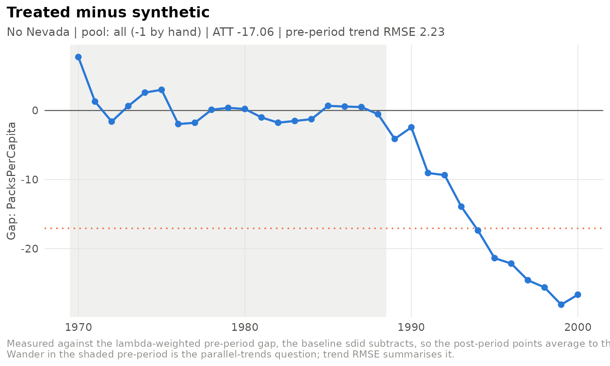

library(sdidlab)
panel <- prop99_panel()A research design rarely ends at one model. You try other donor pools, windows, estimators and covariates, and a month later you need to know exactly which choices produced which number. sdidlab’s answer is to make every model a specification: a declarative record you can hash, save, refit and regenerate.
Specifications hash to an identity
a <- sdid_spec(design = list(window = list(start = 1975)), label = "Late start")
b <- sdid_spec(label = "Same model, new name", design = list(window = list(start = 1975L)))
c(spec_hash(a), spec_hash(b))
#> [1] "cf9bf8b3e4b9" "cf9bf8b3e4b9"The hash ignores labels and notes, the difference between
1975 and 1975L, and the order fields were
given in. Fields still at their defaults are dropped before hashing, so
adding a new option to sdidlab never changes an existing specification’s
identity.
Specifications are validated when they are built. Mistakes fail loudly:
Design choices
A few of the design fields:
-
design$window: the periods used, defaulting to the whole panel. -
design$periods_drop: periods removed from both the match and the effect. -
design$effect_time: for outcomes that phase in. Periods fromtreat_timeup toeffect_timeare dropped, because they are contaminated but not yet saturated. -
pool$drop_units/pool$add_units: hand edits to the donor pool, withpool$exclusion_notesrecording why.
build_setup() shows exactly what a specification
selects, including every exclusion and its reason:
spec <- sdid_spec(
design = list(periods_drop = c(1980, 1981)),
pool = list(drop_units = c("Nevada", "Utah"),
exclusion_notes = list(Nevada = "large tourist cigarette sales"))
)
setup <- build_setup(spec, panel)
c(N0 = setup$N0, T0 = setup$T0)
#> N0 T0
#> 36 17
setup$pool[!setup$pool$included, ]
#> # A tibble: 2 × 4
#> unit label included reason
#> <chr> <chr> <lgl> <chr>
#> 1 Nevada Nevada FALSE dropped by hand: large tourist cigarette sales
#> 2 Utah Utah FALSE dropped by handSweeps in YAML
Several specifications live in one YAML file. Settings they share are
hoisted into a defaults: block, so the file shows exactly
what differs:
specs <- list(
sdid_spec(label = "All donors", inference = list(replications = 100)),
sdid_spec(label = "No Nevada", pool = list(drop_units = "Nevada"),
inference = list(replications = 100)),
sdid_spec(label = "From 1975", design = list(window = list(start = 1975)),
inference = list(replications = 100))
)
cat(write_specs_yaml(specs, NULL, title = "Prop 99 robustness"))
#> # Prop 99 robustness
#> # Placebo standard errors depend on the RNG stream: fit these in file
#> # order under one seed, or with run_specs(seed_each = TRUE).
#> defaults:
#> inference:
#> replications: 100
#> specs:
#> - label: All donors
#> - label: No Nevada
#> pool:
#> drop_units: Nevada
#> - label: From 1975
#> design:
#> window:
#> start: 1975.0Reading the file back gives the same specifications, with the same hashes:
f <- tempfile(fileext = ".yml")
write_specs_yaml(specs, f)
back <- read_specs(f)
identical(vapply(back, spec_hash, ""), vapply(specs, spec_hash, ""))
#> [1] TRUEThe run store
Give fit_spec() or run_specs() a directory
and every fit is saved: the specification, the fitted object, the
placebo draws, and the pool and balance records. A saved run can be
reloaded and re-plotted without refitting.
store <- file.path(tempdir(), "prop99-runs")
runs <- run_specs(specs, panel, store = store, progress = FALSE)
index <- refresh_runs_index(store)
index[, c("label", "spec_hash", "att", "se")]
#> # A tibble: 3 × 4
#> label spec_hash att se
#> <chr> <chr> <dbl> <dbl>
#> 1 From 1975 d692efccf921 -17.9 10.5
#> 2 No Nevada ac577c93aa93 -17.1 9.34
#> 3 All donors ae352f00fbff -15.6 10.9
again <- load_run(index$path[index$label == "No Nevada"])
plot_gap_path(again)
prune_runs() keeps only the latest few runs of each
specification.
A script that reproduces the results
write_spec_script() writes a self-contained R script:
your data-loading code, the specifications (embedded as YAML), and the
fit. Every specification is fitted with its own seed, so the script
reproduces each standard error exactly.
cat(write_spec_script(specs[1:2], NULL, data_code = "panel <- prop99_panel()",
title = "Prop 99 robustness"))
#> # Prop 99 robustness
#> # Generated by sdidlab 0.1.0 on 2026-09-29.
#> # Each specification is fitted with its own seed (seed_for()), so every
#> # standard error reproduces exactly, whatever order the specs are run in.
#>
#> library(sdidlab)
#>
#> # -- Data ---------------------------------------------------------------
#> panel <- prop99_panel()
#>
#> # -- Specifications -----------------------------------------------------
#> spec_yaml <- r"---(
#> # Prop 99 robustness
#> # Placebo standard errors depend on the RNG stream: fit these in file
#> # order under one seed, or with run_specs(seed_each = TRUE).
#> defaults:
#> inference:
#> replications: 100
#> specs:
#> - label: All donors
#> - label: No Nevada
#> pool:
#> drop_units: Nevada
#> )---"
#> spec_path <- tempfile(fileext = ".yml")
#> writeLines(spec_yaml, spec_path)
#> specs <- read_specs(spec_path)
#>
#> # -- Fit ------------------------------------------------------------------
#> runs <- run_specs(specs, panel, seed_each = TRUE)
#> results <- sdid_results_table(runs)
#> print(results, row.names = FALSE)Your own outcomes and donor pools
A specification’s outcome can be any panel column. For outcomes that a column cannot express, and for named donor pools, register a function:
register_outcome("log_packs", function(panel, spec) {
d <- panel$data
data.frame(unit = d$State, time = d$Year, y = log(d$PacksPerCapita))
}, label = "Log packs per capita")
register_pool("mountain_west", function(panel, spec) {
c("Colorado", "Idaho", "Montana", "Nevada", "New Mexico", "Utah", "Wyoming")
})
run <- fit_spec(sdid_spec(data = list(outcome = "log_packs"),
pool = list(base = "mountain_west"),
inference = list(replications = 50)),
panel, seed = 1)
run
#>
#> ── sdid_run 546601b348a9
#> • ATT -0.2937 95% CI [-0.415, -0.172]
#> • SE 0.062 (t = -4.74)
#> • fit sdid, N0 = 7, T0 = 19, pre-period RMSE 0.0222
#> • placebos 50/50 kept at trim_k 5
#> • treated California from 1989
#> • spec 546601b348a9 run 20260929T054553921098-546601b3Registered functions receive the whole specification, so a
specification’s free-form options section can parameterise
them. That is how a project builds a domain layer (derived outcomes from
several tables, peer groups defined by external rankings) on top of
sdidlab without changing it.